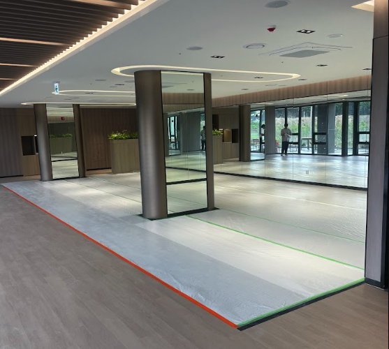
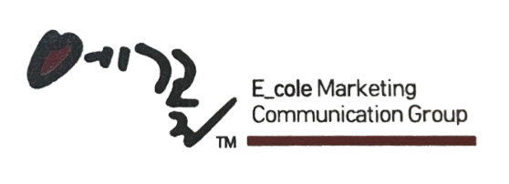
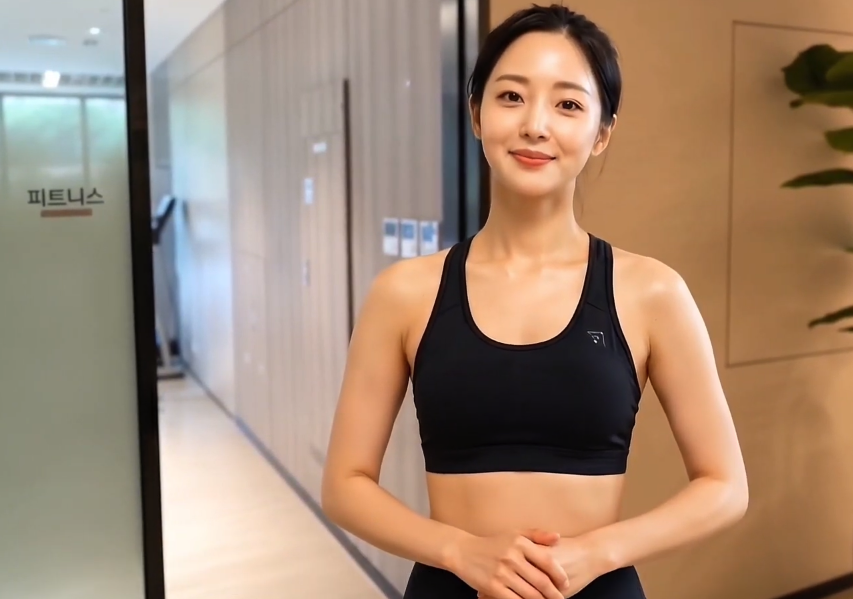
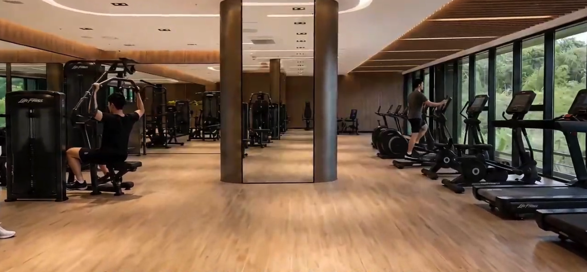
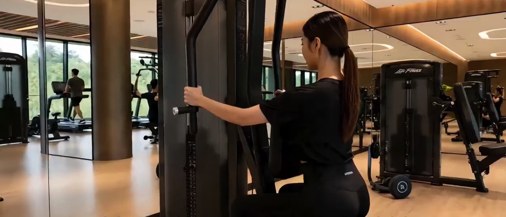

BEFORE — 실제 현장

장비 반입 전, 바닥 보양 상태의 공사 중 현장 사진

에꼴은 급격히 발전 중인 AI 영상 기술을 적용하여, 기존의 방식보다 더 적은 예산으로 빠르게 커뮤니티 시설·행사 안내 영상을 제작하고 있습니다. 촬영팀·장비·섭외에 묶여 있던 기존 오프라인 제작 및 표현의 한계를 벗어나, AI 영상을 통해 고객에게 더 편한 이해와 누릴 수 있는 혜택을 전달하고 있습니다.

클럽더샵 및 조경 가이드 영상 제작 예정
| 기존 오프라인 촬영 제작 | ECOLE AI 영상 | |
|---|---|---|
| 제작 비용 | 촬영팀 · 장비 · 배우 섭외 비용 포함 | 최대 40% 이상 절감 — 섭외·장비 비용 ZERO |
| 제작 기간 | 4 ~ 8주 | 1 ~ 2주 |
| 현장 촬영 | 촬영팀 출입 — 안전관리·보안 부담 발생 | 무촬영 혹은 간단한 사진 쵤영— 안전 리스크 ZERO |
| 촬영 구도 | 장비, 기술, 인력에 의해 제한 | 구도 제한이 없음 |
| 다국어 | 언어별 별도 재제작 | 동일 영상 다국어 전환 가능 |
실제 촬영으로는 구현이 불가능한 추락·협착·화재 등 사고 상황을 AI로 정밀 재현 가능합니다. 정기 안전교육의 전달력과 몰입도를 높일 수 있을 것으로 파악
외국인 근로자 비중이 높아진 현장을 위해, 한 편의 영상을 베트남어·중국어·태국어 등 다국어 버전으로 즉시 전환합니다. 언어별 재촬영 없이 동일 퀄리티의 교육 영상제작이 가능합니다.
실제 진행 사례 - 현장 사진·도면·장비 정보만으로 제작



현장 니즈와 영상 목적 정의
영상 목적에 맞는 구도 및 시나리오 정리
무촬영 영상 생성 및 편집
결과물 확인 후 진행 결정
당일 수정, 재촬영 불필요
건설 안전 교육 및 시뮬레이션 콘텐츠로 활용
입주 행사, 커뮤니티 시설 안내
결산 내용 및 영상으로 표현이 필요한 영상 제작
기존 방식으로는 구현이 어려웠던 영상을 더 멋지게 구현할 수 있도록 도와드립니다.